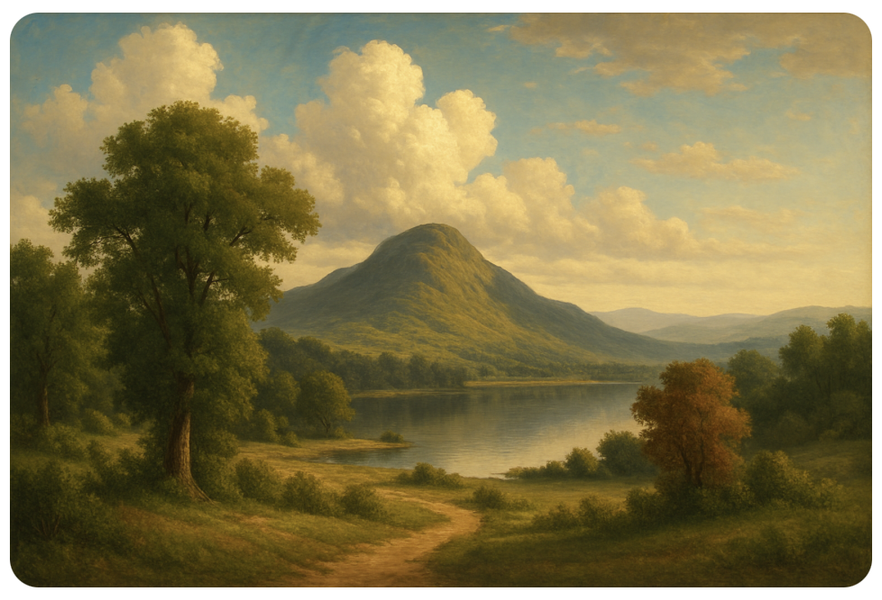

Image Analysis
In Part 1 of this blog series, we compared how Claude and ChatGPT fare with producing images, looking at its quality, content, and reasoning behind the images it chose to produce (without any additional guideline on this generative process). While these experiments can certainly be extended by prompting each of the models to produce specific images and testing their creative capacities, this would only hammer home ChatGPT’s versatility and superior ability to produce high-quality images. So, I decided that another distinctive feature between the two models is their analytical abilities within this realm, which Claude may have ChatGPT beat.
Claude’s Upper-hand
As it was mentioned in the last blog, ChatGPT’s integration of DALL-E3 makes for a more creative model whose images themselves are of a higher tier compared to Claude. However, Claude on the other excels in analyzing material like complex documents and images, despite the fact that it doesn’t do an excellent job generating them.
- Claude’s integration of the Artifacts system allows it do proceed in high-quality content analysis, which is a tool used to store and manage data referenced as “artifacts.”
So, another potentially interesting form of experimentation could involve testing their analytical abilities!
What does it see?
First picture:
The following pictures were input into both ChatGPT and Claude in new chat logs:

- This image was generated by Claude in the previous blog post
Second picture:

- This image was generated by ChatGPT in the previous blog
Questions:
The associated questions for each image were as follows (the exact same sentences used per model to ensure prompt uniformity and control for any variation due to prompting in the output), and only one chat log was recorded per :
(1) Describe the following image for me: <copy and pasted image code/screenshot>*
(2) Can you tell me what is happening in this image?
(3) What are the most important visual elements?
(4) What is the mood or feeling conveyed by this image?*this was from the second chat log with Claude described by the previous blog post, or from the third log with ChatGPT, respectively
Claude vs ChatGPT: Chat log comparisons per question for the first (Claude-generated) photo
Question 1:
Claude:
The image shows a serene nature landscape created with SVG graphics. It depicts:
The scene has a light blue sky as the background. In the upper right corner, there’s a bright yellow sun with a subtle glow around it.
The landscape features rolling mountains in two layers - a lighter green range in the background and a darker green range in the foreground, creating a sense of depth.
In the center of the image is a blue oval lake or pond nestled among the mountains.
There are two detailed evergreen trees in the scene - one smaller tree on the left side and a larger, more prominent tree on the right side. Both trees have brown trunks and triangular green foliage layers that get smaller toward the top, creating the classic pine tree shape.
The sky contains two fluffy white cloud formations - one smaller group on the left side and a larger, more substantial cloud formation on the right side.
Finally, there are two small birds flying in the sky, depicted as simple curved black lines representing their silhouettes in flight.
Overall, it’s a peaceful nature scene with mountains, trees, water, and sky elements creating a serene outdoor landscape.
ChatGPT:
The image is a peaceful nature scene rendered in vector graphics. Here’s a detailed description:
Sky: A bright blue sky (
#87CEEB) fills the background, suggesting a clear day.Sun: A yellow sun (
#FFD700) shines from the upper right corner with a glow effect created by a semi-transparent outer circle.Mountains: Two layers of green mountains dominate the midground:
- The background mountains are olive green (
#6B8E23), with jagged peaks. - The foreground mountains are a darker shade (
#556B2F), giving a sense of depth.
- The background mountains are olive green (
Lake: At the bottom of the scene is a large, oval-shaped lake colored in steel blue (
#4682B4), reflecting the sky.Trees: Two stylized evergreen trees stand on either side of the lake:
- The one on the left (near coordinates 150, 320) is shorter, with three stacked green triangles (
#2E8B57) and a brown trunk (#8B4513). - The one on the right (at 650, 290) is taller, similarly layered with green foliage and a thicker trunk.
- The one on the left (near coordinates 150, 320) is shorter, with three stacked green triangles (
Clouds: Fluffy white clouds hover in the sky, grouped over the left and right sides, made of overlapping ellipses.
Birds: Two flying birds are illustrated with simple curved black lines, resembling “M” shapes, indicating flight.
The overall mood is calm and scenic, with a balance of natural elements in a stylized, cartoon-like format.
Would you like this scene translated into another style, like a painting or a nighttime version?
Takeaways:
Ok, so ChatGPT generated a more structured response compared to Claude in this case; it gave a more in depth, detailed breakdown of each visual component (i.e. described the sky, trees, lakes, mountains, etc.), while Claude provided a descriptive paragraph.
Question 2:
Claude:
Looking more closely at the image, this is a tranquil nature scene depicting a peaceful day in a mountain landscape.
The bright sun is shining in the corner of a clear blue sky, while a few fluffy white clouds float gently across it. Two small birds are soaring through the air, perhaps enjoying the pleasant weather.
The scene shows multiple layers of rolling green mountains or hills in the distance, with a calm blue lake nestled in the valley below. Two evergreen trees stand at different points along the shore - one smaller tree on the left side and a taller, more prominent one on the right.
There’s no human activity or buildings visible - it’s simply a serene natural landscape capturing a quiet moment in the wilderness. The style is somewhat minimalist and stylized rather than photorealistic, giving it a peaceful, gentle atmosphere.
ChatGPT:
This image depicts a tranquil natural landscape scene, likely in the early morning or late afternoon based on the sun’s position. Here’s what’s happening in the image:
The sun is shining brightly from the upper right, casting a warm light across the scene. The faint glow suggests it may be rising or setting.
Two flocks of birds are flying through the sky, gliding peacefully—this adds a sense of movement and life.
Clouds drift calmly in the sky, further emphasizing the serene weather.
Two layers of mountains create depth:
- The darker foreground mountains suggest the viewer is closer to them.
- The lighter background mountains recede into the distance.
A large lake reflects the sky near the bottom of the image, implying stillness and quiet.
Two evergreen trees, one on each side of the lake, frame the landscape and add a forested feel.
Overall, the scene shows a peaceful moment in nature, with no human activity—just birds, trees, water, and mountains under a clear blue sky.
Nothing dramatic is “happening” in terms of events; instead, the image captures a moment of quiet natural beauty.
Would you like me to turn this into a short story or narrative?
Takeaways:
Once again, ChatGPT is perhaps a little more creative in its responses than Claude, offering more inferences in its impressions and extrapolating the nature of the photo (i.e. “likely in the early morning…based on the sun’s position”), speaking to its more creative capacities. However, one can appreciate here that Claude by contrast continually offers more natural, text-based conversations while ChatGPT sticks to the bulleted-break down.
Question 3:
Claude:
The most important visual elements in this landscape are:
The layered mountains - They create the fundamental structure of the landscape, with their distinct light and dark green tones establishing depth and perspective in the scene.
The blue lake - As a central focal point, the oval-shaped body of water draws attention and creates a natural resting place for the eye.
The bright yellow sun - Positioned in the upper right corner, it serves as a key light source and visual anchor for the composition.
The evergreen trees - They add vertical elements to the scene and provide scale, with their distinctive triangular shapes clearly identifying them as pine or fir trees.
The white clouds - They break up the blue sky and add texture to the upper portion of the image.
These elements work together to create a recognizable natural landscape that conveys a peaceful outdoor setting with classic scenic components.
ChatGPT:
The most important visual elements in this image—those that define its composition, mood, and focus—are:
The Sun:
- Positioned high in the sky with a warm glow, it draws the eye and sets the time of day.
- It’s the main light source, establishing a bright, cheerful atmosphere.
The Mountains (Foreground and Background):
- These layered green ranges create depth and perspective.
- Their jagged shapes guide the viewer’s gaze across the landscape.
The Lake:
- Centrally placed near the bottom, it serves as a peaceful focal point.
- Its reflective surface balances the sky above and grounds the image.
Trees:
- The two large stylized evergreens on either side frame the scene and introduce vertical contrast.
- They add a sense of scale and life to the landscape.
Birds in Flight:
- These small, curved black lines provide movement and narrative.
- They add liveliness and a sense of distance or vastness.
Clouds:
- Soft, overlapping ellipses that balance the composition horizontally.
- They contribute to the serene, natural setting.
Each element works together to evoke a calm, balanced natural scene. The layering (sky, mountains, trees, lake) gives the image depth, while the sun and birds provide energy and visual interest.
Would you like help emphasizing or rearranging any of these elements in a new version?
Takeaways:
ChatGPT tends to recycle the content of its responses, referring back to the bulleted elements and providing relatively less description per aspect. Claude on the other hand includes one less item, but slightly more description. In other words, Claude may emphasize quality over quantity while ChatGPT tends to focus on the opposite.
Question 4:
Claude:
The mood conveyed by this image is one of tranquility and serenity. Several elements work together to create this peaceful atmosphere:
The soft blue sky and gentle yellow sun create a calm, clear day setting rather than dramatic weather conditions.
The rolling mountains in soothing green tones suggest stability and permanence, arranged in a balanced, harmonious way across the landscape.
The still lake at the center provides a sense of quietude and reflection, acting as a peaceful focal point.
The fluffy white clouds float leisurely in the sky, suggesting gentle weather and unhurried time.
The scattered trees and small birds add life to the scene without disrupting its calm, creating a subtle harmony between nature’s elements.
The overall color palette of blue, green, and earth tones is inherently calming and reminiscent of natural settings where people often seek relaxation.
The simplified, almost stylized representation of these natural elements gives the image a gentle, approachable quality rather than threatening or overwhelming grandeur.
Together, these elements evoke feelings of peace, contentment, and gentle appreciation of nature - the kind of sentiment one might experience during a quiet moment at a mountain lake on a pleasant day.
ChatGPT:
The mood conveyed by this image is peaceful, calm, and serene. Several elements contribute to this feeling:
- Soft Blue Sky and Gentle Clouds: These suggest a clear, mild day—free from tension or urgency.
- Warm, Radiant Sun: Its glow creates a sense of comfort and tranquility, often associated with morning or evening calm.
- Still Lake: The smooth surface of the water implies quietness and stillness, reinforcing the relaxed atmosphere.
- Natural Colors: The greens of the trees and mountains, blues of the sky and lake, and golden sun all create a soothing, harmonious palette.
- Flying Birds: Their gentle motion across the sky adds a touch of life without disrupting the calm.
Overall, the image evokes a feeling of being at peace in nature, perhaps at a quiet mountain lake during a perfect moment of solitude or reflection.
Would you like this scene to convey a different mood, like mystery, excitement, or melancholy?
Final notes:
Once again, Claude is far more descriptive and in-depth in its response compared to ChatGPT, which continues to refer back to the elements it already listed, never strays from it’s structured bulleted response, and adds little new information with each successive prompt.
The second part of this experiment will follow the same structure, but now I will ask the model to analyze the photo generated by ChatGPT. In an effort to simplify and condense this reading for the sake of the reader, I’ll stick to comparing the two according to only two of the four questions above (especially seeing that the first part already highlighted some major differences already!).
The two questions included will just be the third and fourth (visual elements and feeling/emotion questions, respectively).
Comparisons According to the Second (ChatGPT generated) Photo
Question 3:
Claude:
The image shows a serene landscape painting in the Hudson River School style, characterized by several important elements:
- A prominent, rounded mountain or hill as the focal point in the middle distance
- A calm lake or river reflecting the sky
- Lush trees framing the scene, particularly a large tree on the left side
- A winding dirt path leading toward the water
- Dramatic clouds in a blue sky, with large cumulus formations
- Golden, warm lighting suggesting late afternoon
- A sense of untouched wilderness with no visible human structures
- A harmonious color palette of greens, blues, and golden hues
The painting exemplifies 19th-century American romantic landscape tradition, emphasizing the beauty and tranquility of nature with idealized, carefully composed elements to create a peaceful, contemplative scene.
ChatGPT:
The image you provided appears to be a digitally rendered or painted landscape in a style reminiscent of the Hudson River School—romantic, detailed, and serene. Here are the most important visual elements:
Central Mountain: The focal point of the composition is the mountain at the center, bathed in warm light. It draws the viewer’s eye and establishes a sense of grandeur and tranquility.
Lake/Body of Water: Just below the mountain, a calm reflective lake adds serenity and balance to the scene. It acts as a natural mirror, enhancing the light and atmosphere.
Trees and Foliage: The foreground and sides are framed by detailed, lush trees, with varied colors suggesting a transition in seasons (possibly late summer or early fall).
Pathway: A dirt path winds through the lower left of the image toward the water, guiding the viewer’s eye into the scene and adding a sense of depth and human presence, even if subtle.
Sky and Clouds: The expansive sky with large, fluffy clouds enhances the scale and mood, contributing to a peaceful and slightly majestic atmosphere.
Lighting and Color Palette: The warm, golden lighting indicates either morning or late afternoon. The soft contrast between the light on the mountain and the shadows in the trees gives the image depth and realism.
Would you like a description that focuses more on emotional tone, artistic style, or potential symbolism?
Takeaways:
Claude’s vocabularly used to describe the image is maybe a touch more rich than that of ChatGPT, and is far more concise. However, ChatGPT does provide a lengthier, more extensive decomposition that doesn’t necessarily include redundant information, in essence saying more than Claude.
Question 4:
Claude:
The mood conveyed by this image is one of profound tranquility and contemplative serenity. The painting evokes:
A sense of peaceful harmony between all natural elements—the mountain, water, trees, and sky exist in perfect balance Quiet reverence for the unspoiled wilderness, characteristic of Romantic and Hudson River School aesthetics A feeling of timelessness and escape from the bustle of civilization Gentle optimism suggested by the warm, golden light and the inviting path leading forward A meditative quality that invites the viewer to pause and reflect Subtle grandeur that inspires awe without overwhelming drama
The artist has created an idealized natural sanctuary that offers both comfort and spiritual elevation—a place where one might feel both humbled by nature’s beauty and renewed by its serenity.
ChatGPT:
The mood conveyed by this image is one of tranquil reverence and serene awe. Several elements contribute to this:
- Soft, warm lighting evokes a peaceful time of day—likely early morning or late afternoon—suggesting calm and quiet reflection.
- The still water and gently winding path invite a contemplative mood, as if encouraging the viewer to step into the scene and take a slow, thoughtful walk.
- The majestic mountain in the background inspires a sense of wonder and humility, a hallmark of the sublime in romantic landscape art.
- Balanced composition and natural harmony (lush trees, reflective water, soft clouds) promote a feeling of stability and order within nature.
Overall, the image radiates a calm, timeless beauty that encourages peace, introspection, and a connection to nature.
Would you like me to write a short narrative or poem inspired by this scene?
Final, FINAL notes:
Interestingly, for this question ChatGPT produced one of its shortest responses throughout this experiment. Howevever, with the exception of each’s structure, the content is fairly similar (i.e., both described it as inherently peaceful, introspective, or blissful). It’s also interesting to note ChatGPT after each question always ended with an opportunity to inquire further into the nature of the photo, e.g. asking about its metaphorical or symbolism implications, or to craft a story based on its elements.
Because it asked this… I decided to include one more question for the two models for each image:
What is the symbolism or metaphorical implication of this image?
Photo 1 (Claude generated):
Claude:
The symbolism and metaphorical implications of this image include:
Harmony in nature - The balanced composition of sky, mountains, water, and trees represents the interconnectedness of natural elements and ecological harmony. Each component has its place in a greater whole, suggesting natural order and equilibrium.
Perspective and life’s journey - The layered mountains with varying heights symbolize life’s challenges and accomplishments, with peaks and valleys representing ups and downs in our experiences. The path implied through the landscape can symbolize life’s journey.
Reflection and contemplation - The central lake mirrors its surroundings, suggesting introspection and self-awareness. Lakes in imagery often represent the unconscious mind or a place for meditation and deeper understanding.
Permanence and change - The mountains represent stability and permanence, while the birds and clouds symbolize freedom, transience, and constant movement - illustrating the duality of fixed and changing elements in our lives.
Aspirational elements - The vertical components (trees reaching upward, mountains rising to peaks) symbolize growth, aspiration, and the human desire to elevate oneself. The birds flying freely in the sky represent liberation and transcendence.
Simplicity and essential truth - The stylized, somewhat minimalist representation strips nature to its core elements, suggesting that beauty and meaning can be found in simplicity rather than complexity.
Sanctuary and refuge - The protected valley scene with its calm lake and sheltering mountains evokes a sense of safe haven or retreat from the complexities of modern life.
This type of landscape imagery has been used throughout art history to evoke both the literal beauty of natural settings and to serve as a visual metaphor for human emotional
ChatGPT:
This image carries several symbolic and metaphorical implications rooted in nature and its elements. Here’s a breakdown:
🌞 The Sun
Symbolism: Life, energy, clarity, hope
- Rising or shining brightly, the sun often represents new beginnings, enlightenment, or the promise of a new day.
- Its warm glow suggests positivity, growth, and optimism.
⛰️ Mountains
Symbolism: Strength, challenges, stability, spiritual ascent
- The layered mountains symbolize the journey of life—with ups and downs, near and far goals.
- The distant peaks can imply aspiration or the unknown future, while the closer ones may reflect current experiences or obstacles.
🌊 The Lake
Symbolism: Reflection, tranquility, emotional depth
- Still water often represents inner peace or self-reflection.
- It suggests a quiet mind or a moment of introspection amid life’s activity.
🌲 Trees
Symbolism: Growth, resilience, the cycle of life
- Evergreen trees, in particular, signify perseverance and continuity through changing seasons.
- Their presence on both sides may symbolize balance and protection.
🐦 Birds in Flight
Symbolism: Freedom, transcendence, perspective
- Birds soaring above the land often represent the soul’s liberation, higher perspective, or a journey beyond the physical.
- Their calm flight here may suggest a peaceful transition or mental clarity.
☁️ Clouds
Symbolism: Thought, mystery, or gentle change
- These clouds are light and scattered, which could symbolize fleeting thoughts or passing moments, reinforcing a meditative tone.
Overall Metaphor
This landscape can be seen as a metaphor for life itself:
- The sun brings promise.
- The mountains represent challenges and aspirations.
- The lake offers reflection and stillness.
- The trees suggest personal growth.
- The birds hint at freedom and perspective.
Together, the scene may metaphorically depict a moment of inner peace and clarity during a broader journey—a pause in the midst of life’s path.
Would you like to use this symbolism in a poem or short reflection?
Photo 2 (ChatGPT):
Claude:
The painting carries rich symbolism and metaphorical implications:
The winding path represents life’s journey or the human quest for meaning—inviting the viewer to metaphorically enter and explore the landscape The mountain symbolizes spiritual aspiration, permanence, and the sublime—a connection between earth and heaven The reflective water suggests contemplation, self-awareness, and the mirroring of higher truths in the natural world The framing trees act as sentinels or guardians of this sacred space, with their upward growth symbolizing reaching toward enlightenment The dramatic clouds and clear sky represent the divine or transcendent realm hovering above earthly concerns The untouched wilderness embodies American ideals of pristine nature as a source of moral and spiritual renewal The golden light suggests divine presence or illumination, casting the scene in a moment of revelation
This type of landscape emerged during a period when America was rapidly industrializing, making it a nostalgic counterpoint to progress—suggesting that in nature, humans could find moral clarity and spiritual truth that might be obscured in developing urban centers. The painting can be read as a visual meditation on humanity’s relationship with the natural world and our eternal search for meaning and peace.
ChatGPT:
This image is rich in symbolic and metaphorical implications, particularly within the tradition of romantic landscape art. Here are several potential interpretations:
1. The Journey and Ascent
- The winding path leading toward the lake and the central mountain can symbolize life’s journey—starting in the familiar (the wooded foreground), moving through reflection (the calm lake), and striving toward enlightenment or personal growth (the mountain peak).
- Mountains often symbolize aspiration, challenge, or spiritual elevation, suggesting that life involves a climb toward understanding or self-realization.
2. Nature as a Sacred Space
- The harmonious balance between land, water, and sky, along with the soft, golden light, evokes the idea of nature as divine—a place where one can find peace, clarity, or even the presence of something greater than oneself.
- The untouched wilderness may symbolize purity, truth, or the inner self, untouched by civilization.
3. Time and Transience
- The autumnal hints in the trees (especially the reddish one on the right) subtly suggest the passage of time, transition, or impermanence. This can reflect the idea that beauty is fleeting and must be appreciated in the moment.
4. Reflection and Inner Peace
- The stillness of the water symbolizes inner calm or self-reflection, implying that clarity and insight come from quiet observation and immersion in the natural world.
Metaphorically, the image could represent:
“A soul’s peaceful climb from confusion to clarity, through nature’s quiet wisdom.”
Would you like me to interpret this image using a specific philosophical or cultural lens (e.g., Romanticism, Transcendentalism, Taoism)?
…final, final, absolutely FINAL takeaways!
There was a little bit of variation on the level of detail depending on which photo was being analyzed, for instance ChatGPT described more elements and was more expressive with its own photo (this was particularly notable with the symbolism/metaphor question in the last part of this analysis). This may have been also due to the fact that ChatGPT’s photo was of a higher quality than Claude’s. However, Claude was a little more consistent in its output, giving a similar amount of detail and attention across photos. So, while ChatGPT might be a little more creative at times, it depends on what it’s given; at least with Claude it’s more reliable in kinds of responses it generates, regardless of the quality or type of input!